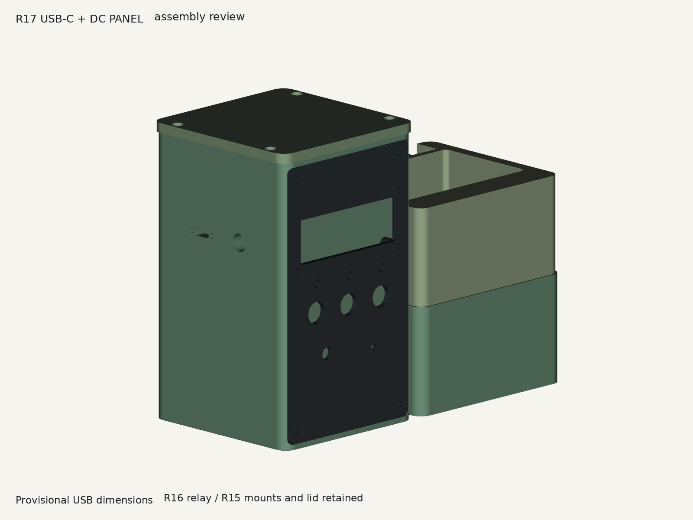

Plant Station R17
Controlled document issue D02 - 28 September 2026
Prototype review. Physical acceptance open. R15/R16 changes are incorporated directly into the R17 instructions. USB/DC fit estimates and the electrical interface hold remain explicit.
Current assembly

R17 integrated body; R16 lid carrying R15 geometry; retained R13 fascia and planter; one shaft-fit knob. Print the port and other fit trials before the body.
Selected print files and hashesPort coupon STL